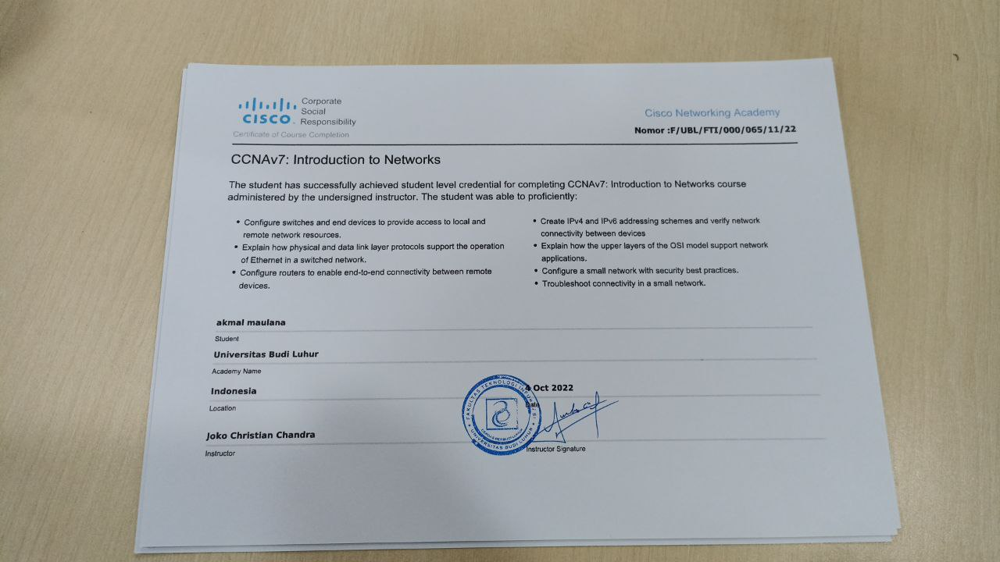

Keahlian & Teknologi
Network & Infrastructure
- Cisco Networking
- Mikrotik Configuration
- Ubiquiti Management
- Fiber Optic Installation
- Network Troubleshooting
System Administration
- Windows Server
- Linux Administration
- System Monitoring
- Hardware Maintenance
- Remote Support
Tools & Software
- Microsoft Office Suite
- Network Monitoring Tools
- Project Management
- Documentation
- Customer Support
Pendidikan & Sertifikasi
Sistem Informasi
Universitas Pamulang (UNPAM)
Fokus pada pengembangan sistem informasi, database management, dan teknologi web. Semester 1 dengan IPK yang memuaskan.
Network Technician Certificate
Cisco Networking Academy
Sertifikasi dalam bidang jaringan komputer, konfigurasi router dan switch, serta troubleshooting network.
SMK Teknik Komputer Jaringan
SMK Pgri 11 Ciledug
Lulusan dengan keahlian khusus dalam bidang teknik komputer dan jaringan. Fokus pada hardware dan networking.
Visi & Tujuan
Karir Profesional
Menjadi seorang IT professional yang kompeten dan diakui dalam bidang sistem informasi dan network engineering.
Inovasi Teknologi
Berkontribusi dalam pengembangan solusi teknologi yang dapat membantu transformasi digital di Indonesia.
Pembelajaran Berkelanjutan
Terus mengembangkan skill dan pengetahuan melalui kursus, sertifikasi, dan pengalaman praktis di industri.
Kolaborasi & Networking
Membangun jaringan profesional yang kuat dan berkolaborasi dengan para ahli di bidang teknologi.
Mari Terhubung!
Tertarik untuk berkolaborasi atau ingin mengetahui lebih lanjut tentang pengalaman dan keahlian saya? Jangan ragu untuk menghubungi saya!
Hubungi Saya Lihat Portfolio